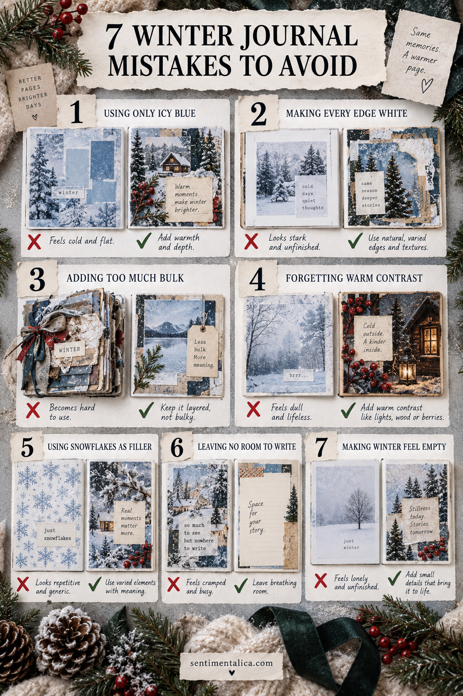

7 Winter Journal Mistakes That Make Pages Feel Cold is not a list of rules. It is a practical editing guide for keeping the photograph, writing, and real memory easier to see.

1. Avoid using only icy blue
The problem is not the material itself; it is allowing it to take the same visual importance as the story. A reliable correction is to limit the palette to one neutral, one anchor, and one accent. Make the change before gluing and check the page from arm’s length.
If the photograph and writing become clearer, the edit worked. You do not need to fill the space you just recovered.
2. Avoid making every edge white
The problem is not the material itself; it is allowing it to take the same visual importance as the story. A reliable correction is to protect the important photograph or sentence first. Make the change before gluing and check the page from arm’s length.
If the photograph and writing become clearer, the edit worked. You do not need to fill the space you just recovered.
3. Avoid adding too much bulk
The problem is not the material itself; it is allowing it to take the same visual importance as the story. A reliable correction is to repeat one shape and vary its scale. Make the change before gluing and check the page from arm’s length.
If the photograph and writing become clearer, the edit worked. You do not need to fill the space you just recovered.
4. Avoid forgetting warm contrast
The problem is not the material itself; it is allowing it to take the same visual importance as the story. A reliable correction is to leave a margin or quiet block for the eye. Make the change before gluing and check the page from arm’s length.
If the photograph and writing become clearer, the edit worked. You do not need to fill the space you just recovered.
5. Avoid using snowflakes as filler
The problem is not the material itself; it is allowing it to take the same visual importance as the story. A reliable correction is to use flat, dry, archival-safe paper whenever possible. Make the change before gluing and check the page from arm’s length.
If the photograph and writing become clearer, the edit worked. You do not need to fill the space you just recovered.
6. Avoid leaving no room to write
The problem is not the material itself; it is allowing it to take the same visual importance as the story. A reliable correction is to replace a general phrase with a date, place, sound, or exact remark. Make the change before gluing and check the page from arm’s length.
If the photograph and writing become clearer, the edit worked. You do not need to fill the space you just recovered.
7. Avoid making winter feel empty
The problem is not the material itself; it is allowing it to take the same visual importance as the story. A reliable correction is to photograph the layout, then remove the least useful piece. Make the change before gluing and check the page from arm’s length.
If the photograph and writing become clearer, the edit worked. You do not need to fill the space you just recovered.
Use the distance test
Place the page on a table and step back. You should notice the main memory first, the supporting paper second, and the small seasonal detail third. If decoration wins, reduce contrast or remove one layer.
Simple pages are not unfinished pages. They are pages where the viewer can tell what mattered.
Find more practical scrapbook guidance.
Keep the finished page somewhere easy to revisit. Add the full date, photograph it in daylight, and store loose originals safely. A simple seasonal page becomes more valuable when its materials stay flat, its words remain readable, and its context is clear years later.